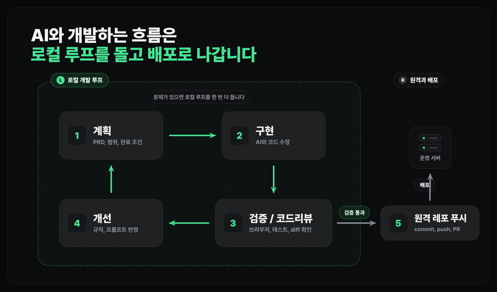

에이전틱 워크플로우
에이전틱 워크플로우란
AI에게 일을 맡길 때 계획, 구현, 검증, 학습을 하나의 루프로 보는 관점
얻어갈 것
- 큰 기능을 "한 번에 만들어줘"가 아니라
탐색/계획 -> 구현 -> 검증 -> 학습으로 나눠 맡기는 이유를 확인합니다. - 에이전틱 워크플로우를 위한 스킬을 다운받습니다.
왜 여기서 흐름을 바꾸나
지금까지는 데이터 읽기, Git, 데이터베이스, 디자인, 로그인처럼 주요 구성요소를 하나씩 다뤘습니다. 앞으로 서비스를 더 개발하다 보면 코드는 복잡해지고, 한 번에 원하는 결과가 나오지 않을 수 있습니다.
- 로그인 이후의 기능은 화면, 데이터, 권한, 예외 상태가 함께 움직입니다.
- "지도에 리뷰 추가해줘"처럼 한 줄로 맡기면 AI가 어디까지 만들고 어디서 멈춰야 하는지 알기 어렵습니다.
- 구현이 맞아 보여도 DB row, RLS, 새로고침 뒤 상태, 모바일 화면, 에러 같은 것을 검증해야 합니다.
- 그래서 하나의 기능을 개발한다는 것은 계획, 구현, 검증, 학습까지 이어지는 단위가 되어야 합니다.
| 방식 | 빠른 점 | 막히는 지점 |
|---|---|---|
| 그냥 해줘 | 작은 UI 수정, 문구 변경에는 빠릅니다. | 범위와 완료 조건이 흐려집니다. |
| 대화로 계속 수정 | 눈에 보이는 결과를 빨리 맞출 수 있습니다. | 같은 설명을 반복하고, 코드 품질은 뒤늦게 발견합니다. |
| 에이전틱 워크플로우 | 시작 전에 기준을 잡고 실행합니다. | 처음에 범위와 검증 방식을 쓰는 시간이 필요합니다. |
에이전틱 워크플로우
에이전틱 워크플로우는 AI에게 한 번에 결과물을 요구하는 방식이 아니라, 작업을 단계로 나누고 실행하는 방식입니다.
| 단계 | AI에게 맡길 일 | 사람이 볼 것 |
|---|---|---|
| 탐색/계획(Plan) | 코드베이스를 읽고, 모호한 요구사항을 질문하고, PRD로 정리합니다. | 이번에 만들 것과 만들지 않을 것. |
| 구현(Implementation) | PRD의 완료 조건을 체크리스트로 바꾸고 코드를 수정합니다. | PRD대로 잘 구현되었는지. |
| 검증(Verification) | 테스트, 빌드, 브라우저 시나리오, diff 리뷰로 증거를 모읍니다. | AI의 완료 선언이 아니라 실제 증거. |
| 학습(Compounding) | 반복된 실수, 검증 명령, 프로젝트 규칙을 남깁니다. | 다음에도 남길 만큼 반복 가능한 내용인지. |
검증과 코드리뷰를 통과한 뒤에야 풀 리퀘스트(PR), 배포, 다음 작업으로 넘깁니다.

Skill로 책임을 나눕니다
이 워크플로우를 크게 스킬로 나눠보면 아래와 같습니다.
clarify: 모호한 요청을 질문으로 좁힙니다.prd: 요구사항, 범위, 완료 조건, 검증 방식을 문서로 만듭니다.implement: 승인된 PRD를 기준으로 코드를 수정하고, 구현 중 필요한 검증을 추적합니다.verify: 구현자와 분리해서 화면, 데이터, 테스트, diff 증거를 다시 확인합니다.pr: 변경 범위와 검증 결과를 리뷰 가능한 형태로 묶습니다.learn: 반복된 실수와 검증 명령을 다음 작업의 기본값으로 남깁니다.
Skill들 추가하기
vibe-engineering은 이 흐름을 Claude Code에서 바로 써볼 수 있게 만든 Skill 묶음입니다. 수업에서는 설치 명령을 외우기보다, 에이전트에게 README를 읽고 현재 프로젝트에 맞게 설치하게 시킵니다.
P1vibe-engineering Skill 설치하기
https://github.com/yansfil/vibe-engineering README를 읽고, 이 프로젝트에서 Claude Code에 vibe-engineering Skill들을 설치해줘. - README의 Claude Code 설치 명령을 기준으로 진행해줘 - 설치 후 설치된 Skill 목록이나 위치를 확인해줘
이번 챕터에서 다룰 것
계획하고 맡기고 검증하기: PRD를 작업 주문서와 채점표로 보고, 구현과 검증까지 한 번에 묶습니다.에이전트에게 검증 최대한 위임하기: 사람이 눈으로 하고 직접 테스트하는 흐름을 에이전트에게 최대한 위임합니다.긴 작업 돌려보기: 여러 사용자 흐름이 섞인 작업을 하나의 PRD 안에서 담아서 구현해보기.배운 걸 프로젝트에 남기기: 반복된 실수, 검증 명령, Skill 후보를 프로젝트 규칙으로 바꿉니다.
마무리
- 바이브코딩은 즉흥적인 요청으로 시작할 수 있지만, 기능이 커지면 에이전틱 워크플로우가 필요합니다.
- 다음 레슨부터는 계획, 구현 그리고 검증에 대해 더 자세하게 알아보도록 하겠습니다.